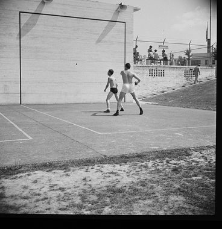

1. Same image, different filename
What changed? Only the filename changed.
What did the methods find? All four methods found this pair.
What does this show? An exact copy needs no AI to identify it.
A practical library experiment
Find possible copies of the same photograph so library staff can review them together.
See the image examples ↓This page shows precomputed experiment results. It does not run AI or accept image uploads.
A library collection may contain the same photograph under different filenames, at different sizes, or saved with lower image quality. A cropped version may show only part of the original picture.
This project compares simple methods and AI for finding these versions. It also measures whether reusing earlier calculations saves time. The tool suggests pairs for staff to review; it does not automatically delete files.
An edited copy comes from one original photograph. Another photograph of the same building, taken from a different angle or at another time, is a different image.
| Method | What it does |
|---|---|
| File hash | Checks whether files contain exactly the same bytes: the information stored inside the file. |
| Perceptual hash (pHash) | Compares compact fingerprints of the overall image appearance. |
| AI image features (SSCD) | Uses a pretrained model to compare visual features, including edited versions. |
| Exact-copy reuse + SSCD | Computes AI features once for identical files and reuses saved features when processing new files. |
pHash is not AI. The reuse method checks identical files first; other files still receive AI comparison, even when pHash misses them.
pHash converts an image to grayscale and resizes it to 32 × 32 pixels. It then uses a discrete cosine transform (DCT) to summarize broad patterns of light and dark, keeping 64 low-frequency coefficients. Each coefficient becomes 1 if it is above their median, or 0 otherwise, producing a 64-bit fingerprint. Two fingerprints are compared by counting how many bits differ: fewer differences suggest more similar images. This is a fixed mathematical algorithm, not an AI model.
Resizing or mild compression often preserves these broad patterns, while cropping can change the overall layout and cause a match to be missed.
These examples use actual files and saved predictions. “Found” means selected for review. The original photograph is known here, so we can check the answers.
What changed? Only the filename changed.
What did the methods find? All four methods found this pair.
What does this show? An exact copy needs no AI to identify it.
What changed? About a quarter of the picture was removed.
What did the methods find? SSCD and Exact-copy reuse + SSCD found it. File hash and pHash missed it.
What does this show? AI can help when an edit changes the overall picture.
What changed? One version was compressed; the other was cropped.
What did the methods find? None of the four methods found this pair.
What does this show? Even AI can miss two edited copies of the same photograph.
Each badge compares a version with its original. A = file hash; B = pHash; C = SSCD; D = exact-copy reuse + SSCD.
1024 × 810 pixels · 272,175 bytes
 Exact copy
Exact copy1024 × 810 pixels · 272,175 bytes
410 × 324 pixels · 29,672 bytes
 JPEG quality 18
JPEG quality 181024 × 810 pixels · 46,293 bytes
887 × 701 pixels · 151,319 bytes
1024 × 810 pixels · 190,041 bytes
Photograph: Gateway Arch, or Gateway to the West, the centerpiece of the Jefferson National Expansion Memorial, St. Louis, Missouri Source record · Rights.
These thumbnails come from the measured files. Image-to-file record.
We used 30 real collection photographs to construct a controlled experiment; its test set contains 270 known duplicate pairs, not 270 images.
| Method | Duplicate pairs found | False matches | Missed pairs |
|---|---|---|---|
| File hash | 18 | 0 | 252 |
| pHash | 230 | 94 | 40 |
| SSCD | 268 | 0 | 2 |
| Exact-copy reuse + SSCD | 268 | 0 | 2 |
| Comparison | Without reuse | With reuse |
|---|---|---|
| First run: SSCD → exact-copy reuse + SSCD | 15.77 s | 13.86 s |
| Adding five files: full recalculation → saved-feature reuse | 13.98 s | 3.82 s |
The first row compares the same 108 test files, with both saved-feature stores empty. The second compares the reuse method on 113 files: start from an empty store and recalculate everything, or keep the earlier 108-file results and calculate only missing features. Both ways produced the same output.
Times are medians of three runs in the same environment, including model loading when needed. They measure processing time, not energy or cost. Full experimental results explain the measurements and their variation.
All methods evaluated the same 108 test files and 5,778 unordered pairs. Precision is the share of selected pairs that were duplicates; recall is the share of known duplicate pairs found. TP means correctly found; FP means a false match; FN means a missed pair.
| Method | Precision | Recall | TP | FP | FN | Candidates |
|---|---|---|---|---|---|---|
| A · File hash | 100.0% | 6.7% | 18 | 0 | 252 | 18 |
| B · Perceptual hash | 71.0% | 85.2% | 230 | 94 | 40 | 324 |
| C · AI features | 100.0% | 99.3% | 268 | 0 | 2 | 268 |
| D · Reuse + AI | 100.0% | 99.3% | 268 | 0 | 2 | 268 |
Thresholds were selected on separate calibration photographs and frozen before testing: pHash distance ≤ 20; AI cosine ≥ 0.75. Calibration record. The AI rule is verified identical bytes OR an AI score above its threshold; pHash does not exclude files from AI comparison. Matches are not expanded through chains of similar pictures.
There are 18 possible original-to-variant matches per column, a smaller denominator than the full pair table.
| Method | Exact copy | Smaller (40%) | JPEG quality 18 | Crop (~25% removed) | Crop, enlarged again |
|---|---|---|---|---|---|
| A · File hash | 18 / 18 | 0 / 18 | 0 / 18 | 0 / 18 | 0 / 18 |
| B · Perceptual hash | 18 / 18 | 18 / 18 | 18 / 18 | 13 / 18 | 13 / 18 |
| C · AI features | 18 / 18 | 18 / 18 | 18 / 18 | 18 / 18 | 18 / 18 |
| D · Reuse + AI | 18 / 18 | 18 / 18 | 18 / 18 | 18 / 18 | 18 / 18 |
Values are median [minimum–maximum]. Wall time includes a complete fresh process, file reads, model loading when needed, comparisons and result output; downloads are excluded. CPU time and peak process memory are separate measurements.
| Method / cache | Wall seconds | CPU seconds | Peak RSS MiB | Files read | AI extractions | Cache hits |
|---|---|---|---|---|---|---|
| A · first | 0.250 [0.210–0.252] | 0.105 [0.104–0.108] | 44.750 [44.750–45.000] | 108 | 0 | 0 |
| A · warm | 0.210 [0.208–0.213] | 0.103 [0.103–0.105] | 45.000 [44.500–45.500] | 108 | 0 | 0 |
| B · first | 2.387 [2.379–2.445] | 1.328 [1.325–1.343] | 98.324 [97.512–98.926] | 108 | 0 | 0 |
| B · warm | 0.445 [0.418–0.446] | 0.268 [0.267–0.274] | 59.000 [58.750–59.000] | 108 | 0 | 108 |
| C · first | 15.773 [15.430–20.591] | 23.385 [22.931–24.628] | 510.375 [500.918–515.383] | 108 | 108 | 0 |
| C · warm | 0.481 [0.473–0.493] | 0.276 [0.275–0.278] | 59.750 [59.750–59.750] | 108 | 0 | 108 |
| D · first | 13.865 [13.513–19.538] | 20.393 [20.271–20.601] | 502.789 [500.941–510.348] | 108 | 90 | 0 |
| D · warm | 0.454 [0.441–0.455] | 0.275 [0.274–0.275] | 59.500 [59.000–59.500] | 108 | 0 | 90 |
C extracted 108 features; D extracted 90, saving 18 model calls (16.7%) by verifying exact copies first. Median first-run wall time was 15.773s for C and 13.865s for D (12.1% lower for D). Both still pay for all file reads and content hashing. Warm runs load cached arrays and do not load the model.
The added files are an exact copy, a resize, a crop and two new independent photographs.
| Method / cache | Wall seconds | CPU seconds | Peak RSS MiB | Files read | AI extractions | Cache hits |
|---|---|---|---|---|---|---|
| full | 13.979 [13.819–14.894] | 21.370 [21.267–21.599] | 508.242 [506.805–514.785] | 113 | 94 | 0 |
| reuse | 3.819 [3.748–4.163] | 3.193 [3.166–3.212] | 503.004 [501.531–508.953] | 113 | 4 | 90 |
Full recalculation extracted 94 features; incremental reuse extracted 4 and reused 90. The added exact copy reused its verified representative. Median wall time: 13.979s full versus 3.819s incremental. Full recalculation and reuse produced exactly equal scores and candidates in all three runs. This checks cache consistency, not model accuracy.
| Method / cache | Stage | Seconds |
|---|---|---|
| A · first | file_read_s | 0.0554 [0.0497–0.0563] |
| A · first | content_hash_s | 0.0150 [0.0150–0.0151] |
| A · first | cache_read_s | 0.0000 [0.0000–0.0000] |
| A · first | image_library_import_s | 0.0000 [0.0000–0.0000] |
| A · first | model_integrity_s | 0.0000 [0.0000–0.0000] |
| A · first | torch_import_s | 0.0000 [0.0000–0.0000] |
| A · first | model_load_s | 0.0000 [0.0000–0.0000] |
| A · first | decode_s | 0.0000 [0.0000–0.0000] |
| A · first | preprocess_s | 0.0000 [0.0000–0.0000] |
| A · first | feature_extract_s | 0.0000 [0.0000–0.0000] |
| A · first | cache_write_s | 0.0000 [0.0000–0.0000] |
| A · first | compare_s | 0.0014 [0.0014–0.0014] |
| A · first | byte_verify_s | 0.0003 [0.0003–0.0003] |
| A · first | phash_library_import_s | 0.0000 [0.0000–0.0000] |
| A · first | phash_s | 0.0000 [0.0000–0.0000] |
| A · warm | file_read_s | 0.0521 [0.0506–0.0538] |
| A · warm | content_hash_s | 0.0150 [0.0150–0.0150] |
| A · warm | cache_read_s | 0.0000 [0.0000–0.0000] |
| A · warm | image_library_import_s | 0.0000 [0.0000–0.0000] |
| A · warm | model_integrity_s | 0.0000 [0.0000–0.0000] |
| A · warm | torch_import_s | 0.0000 [0.0000–0.0000] |
| A · warm | model_load_s | 0.0000 [0.0000–0.0000] |
| A · warm | decode_s | 0.0000 [0.0000–0.0000] |
| A · warm | preprocess_s | 0.0000 [0.0000–0.0000] |
| A · warm | feature_extract_s | 0.0000 [0.0000–0.0000] |
| A · warm | cache_write_s | 0.0000 [0.0000–0.0000] |
| A · warm | compare_s | 0.0014 [0.0014–0.0014] |
| A · warm | byte_verify_s | 0.0003 [0.0003–0.0003] |
| A · warm | phash_library_import_s | 0.0000 [0.0000–0.0000] |
| A · warm | phash_s | 0.0000 [0.0000–0.0000] |
| B · first | file_read_s | 0.0519 [0.0513–0.0544] |
| B · first | content_hash_s | 0.0149 [0.0149–0.0150] |
| B · first | cache_read_s | 0.1463 [0.1289–0.1478] |
| B · first | image_library_import_s | 0.0192 [0.0176–0.0210] |
| B · first | model_integrity_s | 0.0000 [0.0000–0.0000] |
| B · first | torch_import_s | 0.0000 [0.0000–0.0000] |
| B · first | model_load_s | 0.0000 [0.0000–0.0000] |
| B · first | decode_s | 0.4980 [0.4969–0.5056] |
| B · first | preprocess_s | 0.0000 [0.0000–0.0000] |
| B · first | feature_extract_s | 0.0000 [0.0000–0.0000] |
| B · first | cache_write_s | 0.9119 [0.8987–0.9618] |
| B · first | compare_s | 0.0057 [0.0057–0.0058] |
| B · first | byte_verify_s | 0.0000 [0.0000–0.0000] |
| B · first | phash_library_import_s | 0.0047 [0.0034–0.0065] |
| B · first | phash_s | 0.5729 [0.5105–0.6137] |
| B · warm | file_read_s | 0.0559 [0.0515–0.0559] |
| B · warm | content_hash_s | 0.0149 [0.0149–0.0151] |
| B · warm | cache_read_s | 0.2088 [0.2044–0.2160] |
| B · warm | image_library_import_s | 0.0000 [0.0000–0.0000] |
| B · warm | model_integrity_s | 0.0000 [0.0000–0.0000] |
| B · warm | torch_import_s | 0.0000 [0.0000–0.0000] |
| B · warm | model_load_s | 0.0000 [0.0000–0.0000] |
| B · warm | decode_s | 0.0000 [0.0000–0.0000] |
| B · warm | preprocess_s | 0.0000 [0.0000–0.0000] |
| B · warm | feature_extract_s | 0.0000 [0.0000–0.0000] |
| B · warm | cache_write_s | 0.0000 [0.0000–0.0000] |
| B · warm | compare_s | 0.0066 [0.0063–0.0066] |
| B · warm | byte_verify_s | 0.0000 [0.0000–0.0000] |
| B · warm | phash_library_import_s | 0.0000 [0.0000–0.0000] |
| B · warm | phash_s | 0.0000 [0.0000–0.0000] |
| C · first | file_read_s | 0.0515 [0.0486–0.0540] |
| C · first | content_hash_s | 0.0149 [0.0149–0.0150] |
| C · first | cache_read_s | 0.1442 [0.1255–0.1762] |
| C · first | image_library_import_s | 0.0186 [0.0165–0.0231] |
| C · first | model_integrity_s | 0.1065 [0.1060–0.1075] |
| C · first | torch_import_s | 1.3679 [1.0921–1.6608] |
| C · first | model_load_s | 1.2338 [1.0802–1.5007] |
| C · first | decode_s | 0.4509 [0.4497–0.4556] |
| C · first | preprocess_s | 0.4561 [0.4537–0.4568] |
| C · first | feature_extract_s | 9.9776 [9.8481–10.7132] |
| C · first | cache_write_s | 1.0764 [1.0450–5.7030] |
| C · first | compare_s | 0.0131 [0.0131–0.0133] |
| C · first | byte_verify_s | 0.0000 [0.0000–0.0000] |
| C · first | phash_library_import_s | 0.0000 [0.0000–0.0000] |
| C · first | phash_s | 0.0000 [0.0000–0.0000] |
| C · warm | file_read_s | 0.0555 [0.0519–0.0565] |
| C · warm | content_hash_s | 0.0150 [0.0149–0.0150] |
| C · warm | cache_read_s | 0.2457 [0.2428–0.2610] |
| C · warm | image_library_import_s | 0.0000 [0.0000–0.0000] |
| C · warm | model_integrity_s | 0.0000 [0.0000–0.0000] |
| C · warm | torch_import_s | 0.0000 [0.0000–0.0000] |
| C · warm | model_load_s | 0.0000 [0.0000–0.0000] |
| C · warm | decode_s | 0.0000 [0.0000–0.0000] |
| C · warm | preprocess_s | 0.0000 [0.0000–0.0000] |
| C · warm | feature_extract_s | 0.0000 [0.0000–0.0000] |
| C · warm | cache_write_s | 0.0000 [0.0000–0.0000] |
| C · warm | compare_s | 0.0110 [0.0108–0.0111] |
| C · warm | byte_verify_s | 0.0000 [0.0000–0.0000] |
| C · warm | phash_library_import_s | 0.0000 [0.0000–0.0000] |
| C · warm | phash_s | 0.0000 [0.0000–0.0000] |
| D · first | file_read_s | 0.0553 [0.0518–0.0563] |
| D · first | content_hash_s | 0.0149 [0.0149–0.0149] |
| D · first | cache_read_s | 0.1349 [0.1232–0.1516] |
| D · first | image_library_import_s | 0.0175 [0.0172–0.0237] |
| D · first | model_integrity_s | 0.1065 [0.1065–0.1073] |
| D · first | torch_import_s | 1.1954 [1.1073–1.3524] |
| D · first | model_load_s | 1.0983 [1.0886–1.2701] |
| D · first | decode_s | 0.3622 [0.3565–0.3780] |
| D · first | preprocess_s | 0.3684 [0.3678–0.3696] |
| D · first | feature_extract_s | 8.7407 [8.5927–8.7926] |
| D · first | cache_write_s | 0.8913 [0.8219–7.0101] |
| D · first | compare_s | 0.0117 [0.0115–0.0117] |
| D · first | byte_verify_s | 0.0003 [0.0003–0.0003] |
| D · first | phash_library_import_s | 0.0000 [0.0000–0.0000] |
| D · first | phash_s | 0.0000 [0.0000–0.0000] |
| D · warm | file_read_s | 0.0528 [0.0520–0.0569] |
| D · warm | content_hash_s | 0.0150 [0.0149–0.0151] |
| D · warm | cache_read_s | 0.2206 [0.2123–0.2278] |
| D · warm | image_library_import_s | 0.0000 [0.0000–0.0000] |
| D · warm | model_integrity_s | 0.0000 [0.0000–0.0000] |
| D · warm | torch_import_s | 0.0000 [0.0000–0.0000] |
| D · warm | model_load_s | 0.0000 [0.0000–0.0000] |
| D · warm | decode_s | 0.0000 [0.0000–0.0000] |
| D · warm | preprocess_s | 0.0000 [0.0000–0.0000] |
| D · warm | feature_extract_s | 0.0000 [0.0000–0.0000] |
| D · warm | cache_write_s | 0.0000 [0.0000–0.0000] |
| D · warm | compare_s | 0.0097 [0.0095–0.0098] |
| D · warm | byte_verify_s | 0.0003 [0.0003–0.0004] |
| D · warm | phash_library_import_s | 0.0000 [0.0000–0.0000] |
| D · warm | phash_s | 0.0000 [0.0000–0.0000] |
OS page caches were not cleared. Other work on the shared machine may affect these short runs. Individual first/cached runs · Incremental runs · Environment · Original execution log.
Python; SHA-256 and pHash; SSCD sscd_disc_mixup (ResNet50); Intel Xeon Gold 6426Y CPU. Model and environment details.
In this small experiment, AI helped find edited photograph copies. Confirming identical files first and saving earlier results reduced repeated processing while preserving the matches found.
After setup, run these commands from library_image_duplicates:
python scripts/prepare.py --model-only
python scripts/scan.py /path/to/images --method D --output /path/to/reviewOpen /path/to/review/index.html. Choose an output folder outside the images folder. For your own images, the report lists candidates to review; it cannot label them right or wrong without known answers.
Filter the saved test results and inspect images together. These controls do not run AI. This is an experiment with known answers; the labels show where each method succeeded or failed.


A: 0 (not selected) · B: 22 (not selected) · C: 0.8981123 (selected) · D: 0.8981123 (selected)
Same original photograph.
A: 0 (not selected) · B: 26 (not selected) · C: 0.70899916 (not selected) · D: 0.70899916 (not selected)
Same original photograph.

![Exact copy: [Race between Lincoln Beechey in airplane and Barney Oldfield in automobile, going around race track]](images/2003656135__copy.jpg)
A: 0 (not selected) · B: 20 (selected) · C: 0.01645141 (not selected) · D: 0.01645141 (not selected)
Different source photographs; false positive.
No false positives were observed for A, C or D on this test set. This does not guarantee zero false positives in other collections.


A: 0 (not selected) · B: 32 (not selected) · C: 0.3096382 (not selected) · D: 0.3096382 (not selected)
These creek photographs show different viewpoints, banks and fishing poses. They are different exposures, not edited versions of one photograph. Identity review.
File-hash predictions · pHash predictions · SSCD predictions · Reuse + SSCD predictions · Incremental predictions.
Transformation ledger · Source records · Model identity · Full metrics · Dependencies · Original implementation checks.